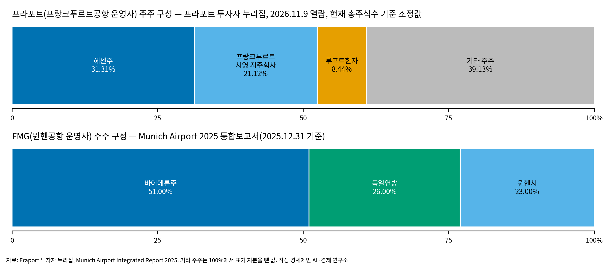

[글로벌 인천공항⑳] 독일 두 허브는 주·시 대주주, 한국 신공항은 재원 제각각
프라포트 헤센주 31.31%, 뮌헨공항 바이에른주 51.0%
가덕 미착공(10월 28일 기준), TK신공항 공자기금 3324억원 미반영
공항 소유·규제 논문 셋, 일본 간사이는 2012년 통합
AI경제저널=김갑봉 기자 | 독일의 두 허브공항은 공항이 있는 주와 시가 대주주다. 프랑크푸르트공항 운영사 프라포트는 헤센주와 프랑크푸르트 시영 지주회사가 52.43%를, 뮌헨공항 운영사 FMG는 바이에른주가 51.0%를 가졌다. 한국은 인천·한국공항공사 통합 방안이 제7차 공항개발종합계획에 담기지 않았고, 가덕도·TK 신공항은 착공과 재원 조달을 두고 쟁점이 이어진다.

독일 두 허브, 소재지 정부가 대주주
프랑크푸르트공항은 2025년 여객 약 6320만명을 처리했다. 프라포트는 2026년 1월 16일 보도자료에서 프랑크푸르트가 유럽에서 환승객에게 직항 목적지를 가장 많이 제공한 공항이라고 밝혔다. 머니투데이는 2026년 7월 22일 제7차 공항개발종합계획에 공항 운영기관 통합 방안이 담기지 않았다고 보도했다.
프라포트 투자자 누리집은 헤센주 31.31%, 프랑크푸르트 시영 지주회사 21.12%, 루프트한자 8.44%로 주주 구성을 공개했다. 헤센주와 프랑크푸르트 시영 지주회사 지분을 더하면 52.43%로 과반이다.
누리집은 이 지분율이 현재 총주식수에 맞춰 조정한 값이라고 적었다(2026년 11월 9일 열람). 뮌헨공항 운영사 FMG의 주주는 바이에른주 51.0%, 독일연방 26.0%, 뮌헨시 23.0%다.
FMG 2025년 통합보고서는 뮌헨이 루프트한자와 협력해 주요 항공 허브로 발전했다고 적었다. 2025년 하계 시간표에는 루프트한자 그룹 장거리 기재 35대가 뮌헨에 배치됐다. 보고서는 전년 수치를 32대로 적었다.

Fichert는 2023년 연구에서 독일 대형 공항 대부분을 소재지 주나 시가 소유하고 일부만 부분 민영화됐다고 정리했다. 독일 공항 요금 규제는 2012년부터 유럽연합 지침 2009/12/EC를 바탕으로 한다고 밝혔다.
한국 신공항, 착공과 재원 쟁점 이어져
파이낸셜뉴스는 2026년 9월 7일 가덕도신공항 부지조성 사업이 10조7000억원 규모라고 보도했다. 이 신문은 11월 우선시공분을 패스트트랙으로 착공할 방침이라고 전했다.
당초 2029년이던 개항 목표는 2035년으로 6년 늦춰졌다. 부산시 공항기획과 3월 5일자 자료는 공사기간을 106개월로 적었다. KNN은 10월 28일 가덕도신공항이 착공하지 못했다고 보도했다.
한국경제는 2026년 10월 6일 TK신공항 총사업비를 11조5000억원 규모로 추산했다. 대구시가 공공자금관리기금 융자로 조달하려던 3324억원은 2026년에 이어 2027년 정부 예산안에도 반영되지 않았다.
홍지선 국토교통부 장관은 인사청문회에서 TK신공항을 국토부가 주도적으로 추진하기에는 한계가 있다고 답했다. 국방부는 TK신공항을 국가사업으로 전환하면 수십조원의 재정 부담이 생길 수 있다는 의견을 국회에 냈다.
정희용 의원은 2026년 10월 22일 한국공항공사 자료를 공개했다. 공사가 7월 8일 구성한 3대 메가프로젝트 지원 TF 문건에는 무안·청주·새만금 공항이 담겼고 대구경북 공항은 없었다.
공사는 서면으로 다른 공항을 배제한 것은 아니며 향후 공항별 여건에 따라 추가 검토하겠다고 답했다. 정 의원은 지방공항 적자가 이어져 시설 개선도 어렵다며 공사가 지방공항 균형 발전 대책을 마련해야 한다고 강조했다.
논문 셋, 공항 소유·규제 분석
Kamp·Niemeier·Müller는 2007년 논문에서 국제 비교 연구들이 독일 공항을 덜 효율적으로 평가해 왔다고 정리했다. 규모와 범위의 경제 부족, 높은 수직통합을 원인 후보로 꼽았다.
Fichert는 독일 공항 규제와 벤치마킹 사례를 다룬 2023년 연구에서 2008~2018년 평균 요금이 대규모 투자가 있던 프랑크푸르트를 빼면 안정적이었다고 정리했다.
Oum·Yan·Yu는 2008년 논문에서 세계 주요 공항 패널자료에 확률적 변경분석을 적용했다. 정부가 과반 지분을 가진 혼합 소유는 완전 공기업 소유보다도 피해야 한다고 결론지었다.
Oum 등은 복수공항 도시에서 공항 하나 이상을 민영화하면 모든 공항의 효율이 개선된다고도 밝혔다. 이 논문은 미국 항만청 운영 공항에 독립 공항청으로 이관을 검토하라고 제안했다.
일본 간사이, 2012년 두 공항 한 회사로
일본 국토교통성 항공국에 따르면 간사이공항과 이타미공항은 2012년 7월 1일 합쳐 새 회사를 세웠다. 회사명은 New Kansai International Airport Co., Ltd.다.
뱅시 에어포트는 2016년 4월 1일 오릭스와 함께 간사이·이타미 두 공항 운영권을 44년간 인수했다고 밝혔다. 주주는 뱅시 에어포트와 오릭스가 각각 40%다.
뱅시 보도자료는 나머지 20%를 간사이 지역 약 30개 기업이 맡을 예정이라고 적었다. 이 자료는 2015년 이용객을 간사이공항 2320만명, 이타미공항 1450만명으로 적었다.
참고문헌
기관 자료
- Fraport AG. The Fraport Share. 투자자 누리집, 2026년 11월 9일 열람. https://www.fraport.com/en/investors/the-fraport-share.html
- Fraport AG(2026). Fraport Traffic Figures 2025. 보도자료, 2026년 1월 16일. https://www.fraport.com/en/newsroom/press-releases/2026/traffic-figures/fraport-traffic-figures-2025.html
- Flughafen München GmbH(2026). Situation of the Group. Munich Airport Integrated Report 2025. https://report2025.munich-airport.com/financial-report/group-management-report/situation-of-the-group/
- 부산광역시 공항기획과(2026). 가덕도신공항 부지조성공사, 기본설계 착수… 부산 기업 참여 크게 늘어. 부산시 자료, 2026년 3월 5일 작성. https://www.busan.go.kr/bgi/news/1721254
- Ministry of Land, Infrastructure, Transport and Tourism, Civil Aviation Bureau(Japan). Kansai International Airport. 게시일 미표기. https://www.mlit.go.jp/koku/15_hf_000033.html
- VINCI Airports(2016). VINCI Airports finalises acquisition of two Kansai airports in Japan and enters the top 5 airport operators worldwide. 보도자료, 2016년 4월 1일. https://www.vinci.com/en/newsroom/press-releases/vinci-airports-finalises-acquisition-two-kansai-airports-japan-and-enters
연구 보고서와 논문
- Fichert, F.(2023). Airport Regulation and Benchmarking: Case Study Germany. In Forsyth, P., Müller, J., Niemeier, H.-M., & Pels, E.(Eds.), Economic Regulation of Urban and Regional Airports. Springer. https://doi.org/10.1007/978-3-031-20341-1_15
- Kamp, V., Niemeier, H.-M., & Müller, J.(2007). What can be learned from benchmarking studies? Examining the apparent poor performance of German airports. Journal of Airport Management, 1(3), 294-308. https://ideas.repec.org/a/aza/jam000/y2007v1i3p294-308.html
- Oum, T. H., Yan, J., & Yu, C.(2008). Ownership forms matter for airport efficiency: A stochastic frontier investigation of worldwide airports. Journal of Urban Economics, 64(2), 422-435. https://ideas.repec.org/a/eee/juecon/v64y2008i2p422-435.html
언론 보도
- 머니투데이(2026). [단독]인천·한국공항公 통합 결국 무산…최상위 법정계획서 빠져. 2026년 7월 22일. https://www.mt.co.kr/estate/2026/07/22/2026072114384624268
- 김동호(2026). 10조 규모 가덕신공항, 대우건설 주도 설계안 등판…연내 '첫 삽' 뜬다. 파이낸셜뉴스, 2026년 9월 7일. https://www.fnnews.com/news/202609071419549147
- 길재섭(2026). [정가표정] 가덕신공항 조기착공은 무산 .. 수도권*TK는 '딴 소리'. KNN, 2026년 10월 28일. https://news.knn.co.kr/news/article/193680
- 유오상(2026). 제주 2공항, 2년 만에 초안 제출…TK신공항 이전은 예산편성 불발. 한국경제, 2026년 10월 6일. https://www.hankyung.com/article/2026100664461
- 문다영(2026). 정희용 “한국공항공사 공항 지원 TK 제외” 형평성 지적. 경북매일, 2026년 10월 23일 게재. https://kbmaeil.com/article/20261022500542
사진 출처
- 사진1 2026년 8월 22일. 김갑봉 촬영(구글 포토 보관 원본).
※ 이 기사는 인공지능기자 위민아이(Wemin_AI)와 협력해 작성했습니다.
관련기사
- [글로벌 인천공항⑲] 인천·한국공항공사 통합 유보, 지방공항 활성화 뒤 재검토
- [글로벌 인천공항⑱] 정일영 의원, 인천공항 5단계 제7차 계획 반영 요구
- [글로벌 인천공항⑰] 인천공항 배당 3194억원, 2011년 매각대금 상임위 삭감
- [글로벌 인천공항⑯] SAF 감면 200편 1740만원, 구매비 지원은 예산안 밖
저작권자 © AI경제저널 무단전재 및 재배포, AI학습 및 활용 금지